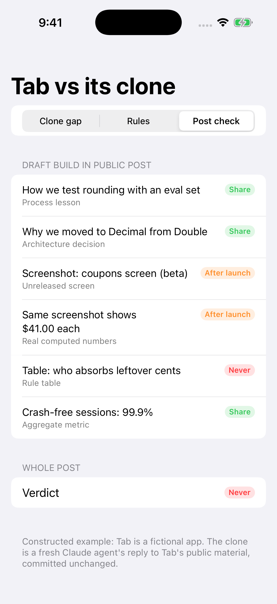

The CloneGap demo, running on the iOS Simulator
Captured by CI: xcodebuild → simctl install → launch → screenshot, on a GitHub-hosted macOS runner.
 4/4 screenshots, 10/13 hidden cases
4/4 screenshots, 10/13 hidden cases
 2 still mine · 7 worked out · 3 leaked
2 still mine · 7 worked out · 3 leaked

A draft post, checked part by part